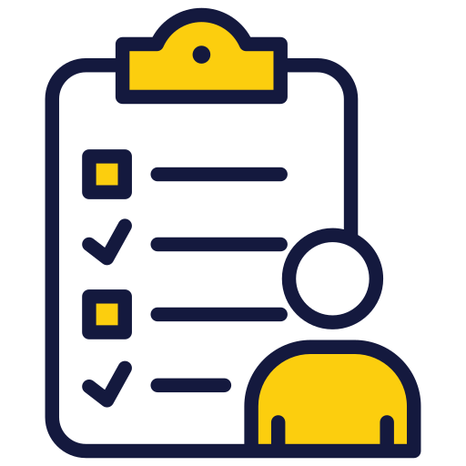

Welcome to TPEN Project Creation Guide
Step by Step Guide to Create a New Project
Welcome to the TPEN project creation guide! This document will help you navigate through the process of creating a new project in TPEN.

-
Choose Project Type :

Decide whether you want to create a new project from a valid resolved internet image, copy an existing one, import a IIIF manifest, or import a T-PEN 2.8 project.
-
Mandatory Requirement :
Ensure you have a resolving image URL from a valid source. If not try to find one and upload it to sources like GitHub, Dropbox, or Google Drive to obtain a valid URL.
-
Follow the Wizard :

Use the step-by-step wizard to guide you through the creation process.
-
Complete Your Project :

Add collaborators, assign roles, set permissions, add hotkeys and required configurations to complete your project.
-
Save and Start Transcribing :
Once your project is set up, you can start transcribing your documents.